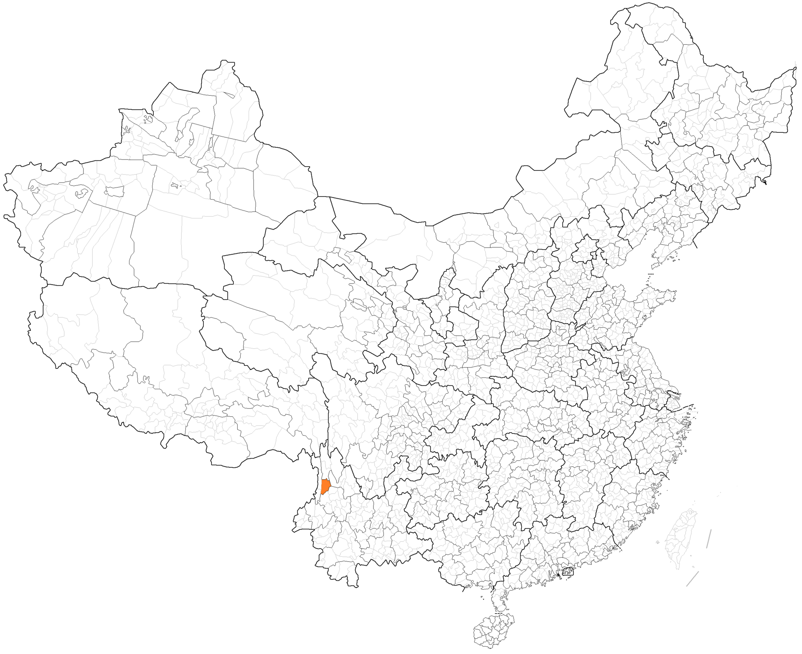
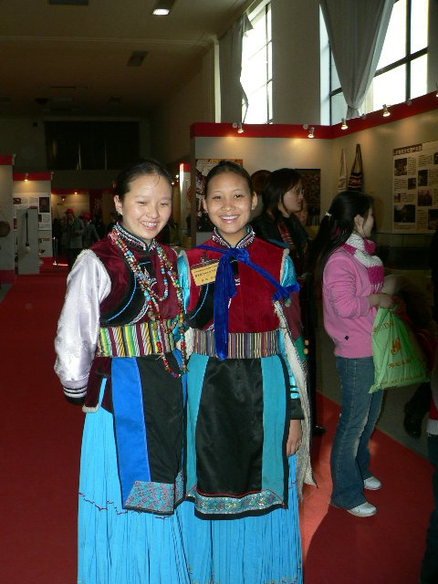

韩规教 全民信仰
由原始崇拜与巫术发展、后受藏族苯教影响而成形的普米族宗教。早期称「丁巴教」、祭司称「丁巴」，后改称韩规。
普米族旧称「西番」，源出古代氐羌族群，1960 年 10 月国务院依本民族意愿批准定名「普米族」（正式公布日期另有 1961 年 6 月一说）（宁蒗普米自称「普日咪」「拍米」，意为「白人」）。先民原居青藏高原，经川西（今木里、盐源一带仍有普米族分布）渐次南迁入滇西北。宁蒗永宁拖支普米人的送魂路线沿西北方向经四川直送北方祖先发源地——一条灵魂的迁徙路线，反向印证了整个民族南下的来路。
普米语属汉藏语系藏缅语族羌语支，分南、北二方言，南部方言分布于兰坪、丽江、维西及宁蒗新营盘等地。

约 1999 年，胡镜明、马红升等人在宁蒗县新营盘乡牛窝子村创办全国第一所韩规学校——从四川请来韩规麦色偏初执教，培养 19 名「小韩规」；此后又在牛窝子村与县城办韩规文化传习班，共培养 28 名学徒、正式毕业 15 名，韩规文化开始走进小学课堂。
普米影像曾经在本馆缺席——2026 年 10 月的检索里，开放影像库中的普米族照片几近空白。11 月复检，在维基共享资源找到了两帧：一张摄于中国国家博物馆非遗成果展的普米族姑娘，一组云南省民族博物馆藏韩规经书（以藏文书写的普米宗教文献）。空白被打破了一角，但这个 4.5 万人的民族，依然是丽江各族中影像记录最稀薄的一支。
两帧均按原许可如实署名。若你手中有更多普米影像，欢迎提供——下一个镜头，仍请对准普米。


PUMI · 45,012 PEOPLE · NOW IN PICTURES